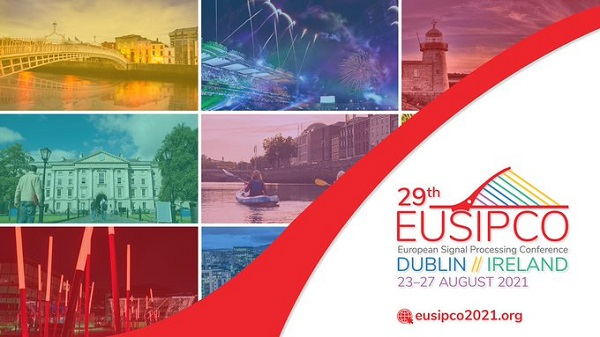

ADAPT Research centre
Principal Investigator
I am a Principal Investigator with the SFI Adapt Research Centre facilitating research collaborations
with industries.
I-Form brings together a nationwide pool of expertise in materials science, engineering, data analytics and cognitive computing.
I-Form is actively engaged across a range of different materials processing technologies, with a particular focus on Additive
Manufacturing (3D printing).
CRT Foundations of Data Science
Supervisor
This is a collaborative PhD programme between the University of Limerick, University College Dublin, and Maynooth University.
Smart Hangar
Collaborator
The Smart Hangar Project aims at addressing the Defence
Challenge
on Cyber-physical system to assist in, or potentially automate, manoeuvring of aircraft between a hangar and apron.
AI and Graphs
Collaborator
This research project addresses Deep Learning and Structural Knowledge for image analysis.
It is a collaboration between University of Angers (
Jean-Baptiste Fasquel lead PI, and Jérémy Chopin PhD candidate), Nantes (Harold Mouchère, LS2N/IPI), and Paris (Isabelle Bloch
(LTCI, Paris).
Latest publications: ICPRAIa (2022), IPTA (2020)
Automatic Asset Mapping
Commercialisation
Using computer vision and deep learning to automate registration of assets for telecoms operators, utility
companies and civil infrastructure providers, AIMapIT replaces manual site surveys with fast, accurate detection and geotagging
of assets from street level imagery with 2m accuracy.

EUSIPCO 2021
General Chair
I am the general chair for the European Signal Processing Conference (EUSIPCO) 2021 organised in Dublin.
Proceedings are published open
access with EURASIP and also on IEEE Xplore.
Follow us on twitter @eusipco2021 and check out the
conference website.
Project Bonseyes H2020
TCD PI (2016-20)
Bonseyes project (Platform for Open Development of Systems of Artificial Intelligence,Grant agreement ID: 732204) is an open and expandable AI platform. It will
transform AI development from a cloud centric model, dominated by large internet companies, to an edge device centric model
through a marketplace and an open AI platform.
Publications:
ACM Internet of Thing (2020),
Project GRAISearch FP7
Coordinator (2014-18)
GRAISearch project (Use of Graphics Rendering and Artificial Intelligence for Improved Mobile Search
Capabilities, Grant agreement ID: 612334) is aiming at developing and
applying revolutionary graphics rendering and artificial intelligence (AI) methods to an existing social media search engine
platform.
Publications:
Computer Animation and
Virtual Worlds (2017),
Computers & Graphics
(2017)
Artificial Intelligence
Research
Deep Learning (or Machine Learning with Neural Networks) is a very popular approach for designing
data-driven artificial intelligence (AI). It is used in many of our applications for object detection, image enhancement,
data synthesis etc.
Latest publications: IEEE ICASSP (2021),
ACM IoT (2020),
BMVC
(2019),
EUSIPCO (2019)
Shapes & Patterns
Research
Pattern analysis is an important part for image processing.
Some of our works have focused on developping robust techniques (e.g. M-estimation, Hough Transform, L2) for pattern
registration (e.g. ellipse fitting) and reconstruction (e.g. 3D reconstruction from multiple views using RGB and RGB-D
cameras).
Publications:
Pattern Recognition (PR)
(2018),
PR (2016),
PRL (2014),
DSP (2013),
PR (2013),
PAMI (2009),
Colour transfer aims at changing the colour feel of an image (target image) using the colour palette of another image
(palette image). Colour transfer can also be applied to videos, and for creating dynamic effects on static images.
We have proposed several approaches to solve this problem based on Optimal Transport and information theory (L2 with GMM) as
cost functions to minimize between colour distributions.
Publications:
MMSP (2020),
EUSIPCO (2019),
IMVIP (2019),
CVIU (2019),
CVIU (2007),
ICCV
(2005)
Road Scene Analysis
Research
Object detection in road scene sequential images has many applications from mapping to autonomous driving. My
PhD thesis (2001) investigated linear machine learning techniques (PCA) and histogram backprojections for object detection and
recognition. Our more recent approaches use Convolutional Neural Networks (CNNs).
Publications: IMVIP (2020), Remote Sensing (2018), ICIP 2018,
CVPR 2000,
ICIP 2001
Climate change is affecting people and their way of life including transportation of goods and people. Our work (2019)
proposes to analyse satellite imagery in combination with street view imagery posted on social media during flooding events,
for assessing the passability of roads. More recently (2020), we propose to infer 3d shape of roofs from aerial imagery
(e.g. for measuring solar energy potentials).
Latest publications: Remote Sensing (2020)
Signal Processing: Image Communication
(2019)
Avatar perception
Research
Blendshape facial rigs are used extensively in the industry for facial
animation of virtual humans. This research project explores the noticeability of blendshapes
and presents new perceptually
based models to predict perceptual importance of blendshapes (collaboration led by Rachel McDonnell).
Latest publications: CAG (2021), MIG (2020 Best short paper award)
Drone Images Trinity 2017
Dataset
Capturing and inferring 3D maps have many applications for Augmented Reality, GIS, urban planning, etc.
In collaboration with Intel Movidius, a drone survey of TCD campus was captured
in the summer 2017 allowing images and 3D point cloud to be available as open dataset.
Dataset Publication: Tara (2017)
Computer Vision and Machine Learning
Teaching
Information, references and some slides used for research and teaching
computer vision and machine learning (e.g. MU module CS410) are shared online.
Applied Forecasting
Teaching
This github repo shares some of the material (i.e. code in R and Rmd + lecturenotes in pdf and tex)
used for teaching Applied Forecasting (5 ECTS) in Trinity College Dublin (2008-2020) for Sophisters.
Please give credits if you find these materials useful.
Links:
Github and Lecturenotes.
Generalized Linear Models
Teaching
My lecturenotes are available online in html format.
These were used for teaching a course (5 ECTS) in Trinity College Dublin (2008-2018) for Sophisters.
Please give credits if you find these materials useful.
Bootstrap, Jackknife and other resampling methods
Teaching
This github repo contains some of the materials used for teaching Bootstrap, Jackknife and other resampling methods
(6 contact hours as part of a 5 ECTS Sophister class in Trinity College Dublin, 2005 & 2007).
Beamer slides are provided as tex files and the resulting PDF RzDBootstrap.pdf is also available.
I share several templates on overleaf for writing documents in LaTeX: a
Report Template (MU) (an older
Report Template (TCD) is also available), the Article Template used in the IMVIP conference and a template for putting together several pdf articles to form a book that has been used for the IMVIP book of
proceedings Book of PDFs
Template.
Videos are available on youtube presenting demos, seminars, interviews from my group
,
and I also edited a few for preparing EUSIPCO 2021.